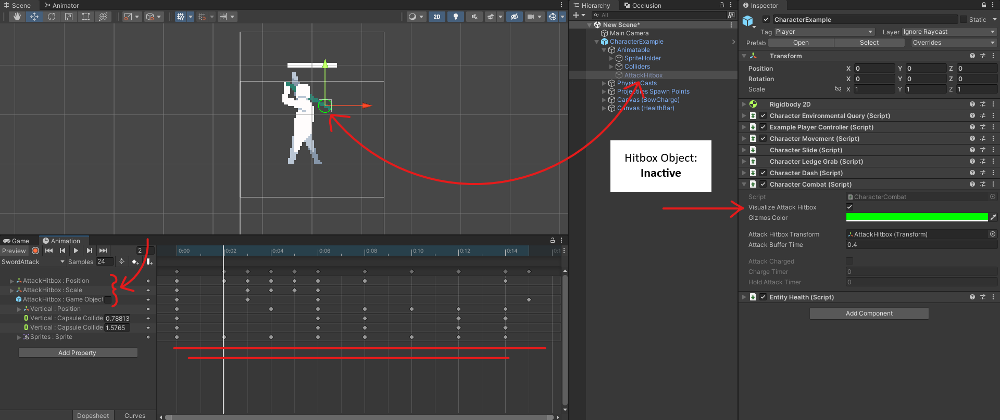
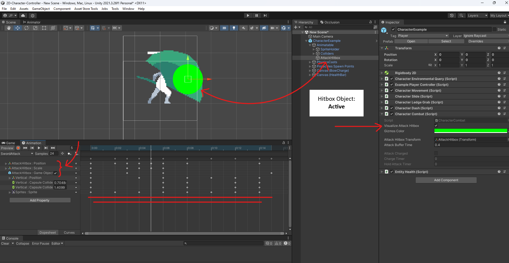

Quickly jump through sections:
- Normal Single Attack - With Projectile
- Normal Combo Attack - No Projectile
- Chargeable Attack - With Projectile
- Projectile Setup
Creating and Configuring the Attack
To utilize the combat system, first and foremost, an attack needs to be created. For details on how to create a new attack, please refer to the AttackSO documentation. Once the attack is created, let's configure it to function as a gun fire. This configuration requires the following:
- Animation clip for the attack.
- A prefab to act as the bullet projectile.
- An empty GameObject to serve as the reference spawn point for the bullet to be fired from.
Let's begin by configuring the created attack. Pay attention to the following properties:
-
AttackPushesCharacter:
Configure the attack so that each time the character attacks, they are pushed backward slightly, adding a polished touch. -
WallCastDistance:
Prevent the character from initiating the attack if they are too close to a wall by configuring this property. This helps prevent the bullet from phasing through walls. -
ThrowAtPercentage:
Configure this property so that the projectile is thrown at the specified percentage of the animation played. This ensures that the projectile matches the animation motion and is not thrown immediately when the attack key is pressed. -
Cooldown:
Ensure that the cooldown set in the configuration matches or is longer than the duration of the attack animation clip to prevent errors or unintended behaviour. -
DamageAmount:
Note that the damage amount set for the attack is 0, as the attack itself won't directly cause damage. Instead, the thrown projectile will inflict damage. Therefore, we need to configure the projectile separately. This includes defining its velocity and the damage amount it can inflict to other objects. On the other hand, the layers that can be damaged will be configured within the AttackSO by adjusting the 'DamageableLayers' property.
Review the image below for a visual example of the attack configuration.

Animator Setup
The next step is to set up the animator controller. To begin open the animator controller for your character.
-
Adding the Animation Clip
Drag and drop the attack animation clip into the animator. This should be the same attack animation referenced in the AttackSO attack. -
Creating State Transitions
Make a transition from the attack animation state to the Exit state of the animator.
Configure the transition with no exit time or transition duration.
Set the transition condition to trigger only when the animator variable "IsAttacking" is false.

Code Implementation
Important: Prior to proceeding, ensure that you have configured the projectile for the attack by referring to the Projectile Setup section.
With the attack now fully set up, we can proceed to implement it through code.
-
References
Begin by creating two fields to reference the AttackSO attack and the spawn point for the bullet projectile. -
Triggering the Attack
As this attack is not configured as a chargeable attack, it is considered a Normal attack. With that in mind, let's call the appropriate function (PerformNormalAttack) when the 'X' key is pressed on the keyboard to allow the character to perform the attack.


Creating and Configuring the Attacks
Similarly to the 'Single Normal Attack' the first step is to create the attacks (AttackSO)
that will form the combo sequence. This involves configuring each attack to your liking until you achieve the desired result.
Let's cofigure the attacks for the combo sequence. Pay attention to the following properties:
-
AdjustPositionOnAttackEnd:
Some animations may cause the character to move slightly, resulting in an offset from their pivot position. If the character moves forward during the animation, they will teleport back to their pivot position when the animation ends. This property addresses that issue by teleporting the character to a specified offset as soon as the animation completes, ensuring a seamless transition. To understand how this property works, try removing the set offset of the attack and observe the effect in action. -
Cooldown:
You'll notice that the cooldown for the fourth attack is different from the others. The system allows for varying cooldowns for each attack in a combo sequence. For example, if your combo sequence consists of four attacks, each attack can have a different cooldown which will affect the cooldown of the combo attack depending on which attack the character stopped attacking.
In this configuration, if the character stops after the first, second, or third attack, the cooldown of the combo attack will be 0.5 seconds. However, if the character completes the entire combo sequence, the cooldown of the combo attack will be 1.5 seconds.


Animator Setup
Just like the 'Single Normal Attack', the next step is to set up the animator controller. To begin open the animator controller for your character.
-
Adding the Animation Clips
Drag and drop each attack animation clip into the animator. The animation clips should be the same with those referenced in each of the AttackSO attacks. -
Creating State Transitions
Make a transition from each attack animation state to the Exit state of the animator.
Configure each transition with no exit time or transition duration.
Set each transition condition to trigger only when the animator variable "IsAttacking" is false.

Attack Hitbox Setup
In order for the attack to inflict damage to other objects, we will need to setup its hitbox. Some information regarding the hitbox:
-
Hitbox GameObject
- The hitbox is an empty game object and is a child of the game object with the SpriteRenderer component.
- You can find it under CharacterTemplate -> SpriteHolder -> Sprites -> AttackHitbox.
- Important: Do not remove or change its position in the hierarchy, as it may affect its functionality.
-
Hitbox Damage
- Damage is inflicted by the combat system only when the AttackHitbox GameObject is active in the hierarchy.
-
To align the hitbox with each attack:
- Select the Sprites game object (located under CharacterTemplate -> SpriteHolder -> Sprites).
- In the animation window, choose the attack animation you want to configure.
- For each frame of the attack, animate the position and scale of the hitbox to match your preferences.
-
Visualizing the Hitbox
To see the attack hitbox during gameplay:- Check the 'VisualizeHitbox' property within the CharacterCombat component.
- When disabled, the hitbox will have an outline (no damage inflicted).
- When enabled, the hitbox will fill with color (damageable objects will take damage).
In brief, align your hitbox animation with the attack motion. This step requires fine-tuning to suit your preferences. Consider adding duplicate frames to allow more movement for the attack hitbox. For reference, explore how the ComboAttack01, SwordAttack, ComboAttack03, and ComboAttack04 animations are configured, under 2D Character Controller -> Visuals -> DeadRevolver -> Animations.
 
Code Implementation
With the attack now fully set up, we can proceed to implement it through code.
-
References
Begin by creating a field to reference an AttackSO list for the combo attack sequence. -
Triggering the Attacks
To properly implement the combo attack, we need to make use of the AttackComboCounter from the CharacterCombat class. We'll utilize the PerformNormalAttack method and trigger the attack sequence when the 'C' key is pressed on the keyboard, allowing the character to perform the combo attacks.

Creating and Configuring the Attack
Similar to how we configured previous AttackSO attacks, we'll now configure a charge attack. This time, we'll ensure to check the 'ChargeableAttack' property in the AttackSO configuration. Enabling this property will reveal additional options in the AttackSO inspector. Keep an eye on the following properties:
-
ChargeableAttack
When you enable this option, it alters the configuration of the attack behaviour. Specifically, additional options related to the chargeable feature will become available in the inspector. These options allow you to fine-tune how the chargeable attack behaves within your game mechanics. -
AttackAnimation
The AttackAnimation is essential for both normal and chargeable attacks. However, it's easy to overlook referencing it specifically in a chargeable attack configuration. Be sure to associate the correct animation clip with the AttackAnimation property. Failing to do so will result in the combat system being unable to identify when the attack has been completed, potentially causing the attack to get stuck on the last frame of its animation. -
InitiateChargeAnimation (Optional)
If your attack involves an initiation animation just before transitioning into the charge loop, you can specify it in this field. However, some attacks may not have such an animation. If your attack lacks an initiation phase, you can leave this field empty. -
ChargeAnimation
The charge animation represents the phase where your character prepares their charge attack. During this time, the character holds the attack and continuously loops the charge animation. The duration of this animation is determined by the rest of the AttackSO configuration. As long as the configuration allows it, your character will remain in the charged state, ready to release their attack. -
ScalableProjectileDamage
Now that the attack is configured as chargeable, you have the option to enable scalable damage. When you toggle this property to true, the combat system dynamically adjusts the damage amount of the CombatSystemProjectile component of the projectile object, based on how long the attack was charged.
Charging the attack for a shorter duration results in less damage, while a longer charge yields more impactful damage. -
ScalableProjectileVelocity
Similar to the ScalableProjectileDamage property, you now have the option to enable scalable velocity for your projectiles. When you set this property to true, the system dynamically adjusts the velocity based on how long the projectile was charged. A shorter charge results in lower velocity, while a longer charge yields a faster and more impactful velocity.
Animator Setup
Setting up the animator for a charge attack requires some fine-tuning. However, the process follows the same logic as for previously created attacks. Let's get started:
-
Adding the Animation Clips
Drag and drop each animation clip into the animator. In this case we will need:-
Initiate Animation (Optional)
Represents the start of the charge attack. -
Charge Animation
The charge phase during which the animation will loop. -
Release Animation
The release phase, where the projectile is thrown and the attack deals damage.
-
Initiate Animation (Optional)
-
Creating State Transitions
Pay close attention when configuring the transitions between animation states. Incorrect configuration may lead to unexpected behaviour.
For reference, check out the "CharacterExample" animator located in the 2D Character Controller -> Visuals -> Animators folder to understand the recommended setup.
Initiate Animation - Transitions:
-
BowDraw -> Exit:
Configure the transition with an Exit Time of 1 and Transition Duration of 0.
Set the condition to the "CancelChargeAttack" trigger. -
BowDraw -> BowAim:
Configure the transition with an Exit Time of 1 and Transition Duration of 0.
Set the condition to the "ChargingAttack" boolean. (true) -
BowDraw -> BowFire:
Configure the transition with an Exit Time of 1 and Transition Duration of 0.
Set the condition to the "ReleaseChargeAttack" trigger.
Charge Animation - Transitions
-
BowAim -> Exit:
Configure the transition with an Exit Time of 0 and Transition Duration of 0.
Set the condition to the "CancelChargeAttack" trigger. -
BowAim -> BowFire:
Configure the transition with an Exit Time of 0 and Transition Duration of 0.
Set the condition to the "ReleaseChargeAttack" trigger.

Fire Animation - Transition
-
BowFire -> Exit:
Configure the transition with an Exit Time of 0 and Transition Duration of 0.
Set the condition to the "IsAttacking" boolean. (false)
Code Implementation
Important: Prior to proceeding, ensure that you have configured the projectile for the attack by referring to the Projectile Setup section.
With the attack now fully set up, we can proceed to implement it through code:
-
References
Begin by creating two fields to reference the AttackSO attack and the spawn point for the bullet projectile. -
Triggering the Attack
Given that the attack is configured as chargeable, the relevant function to invoke is PerformChargeAttack. Now, let's set it up so that the attack triggers while we hold down the 'Z' key on the keyboard.

Creating and Configuring the Projectile
To ensure that the projectile functions effectively within the combat system, follow these steps:
-
Create a prefab:
Begin by creating a new prefab. To this prefab, attach the CombatSystemProjectile component. This component enables you to tailor the projectile's characteristics such as damage and velocity. -
Projectile hitbox
Subsequently, create an empty game object within the prefab. This object serves as the hitbox area for the projectile. Any entity intersecting with this area sustains damage.
Important: Remember to reference the hitbox's transform to the CombatSystemProjectile component. -
Configuration
Fine-tune the projectile's behaviour by adjusting the parameters within the CombatSystemProjectile and Rigidbody2D components. Here, you can specify the desired damage amount and velocity to tailor the projectile's impact, as well as the gravity scale and other physics related parameters.
Important: After configuring the projectile prefab, remember to reference it to the AttackSO attack, under the 'ThrowsProjectile' property in the 'ProjectilePrefab' field.
Setting Up the Projectile Spawn Point
With the projectile now configured, the next step is to set up its spawn point. Follow these steps to create a reference spawn point:
-
Create a New Empty GameObject:
In the Unity Hierarchy, right-click on the character object to which the projectile spawn point will be attached.
Select Create Empty to add a new empty GameObject as a child of the character object. -
Position the Spawn Point:
Rename the new empty GameObject to something like 'BulletSpawnPoint' for clarity.
Position this GameObject at the location on the character from where the projectile should be fired.
Tip: To make positioning easier, temporarily change the default character's sprite to the frame of the animation where the bullet will be fired. This provides a visual reference for accurate placement.

Code Implementation
To enable the projectile to deal damage, create a new class and attach it to the projectile object's root. This class will work in conjunction with the CombatSystemProjectile, which is designed to be versatile, offering three distinct damage mechanisms: For this example, we'll configure the projectile to damage the first collider it encounters.
-
Direct Impact
Damages the first collider it contacts. -
Explosion
Deals area-of-effect damage to all entities within its hitbox. -
Continuous Damage
Inflicts damage over time to entities within its hitbox at set intervals.
For detailed information on configuring these mechanisms, please refer to the CombatSystemProjectile
documentation.
Continue: Normal Single Attack - With Projectile / Chargeable Attack - With Projectile